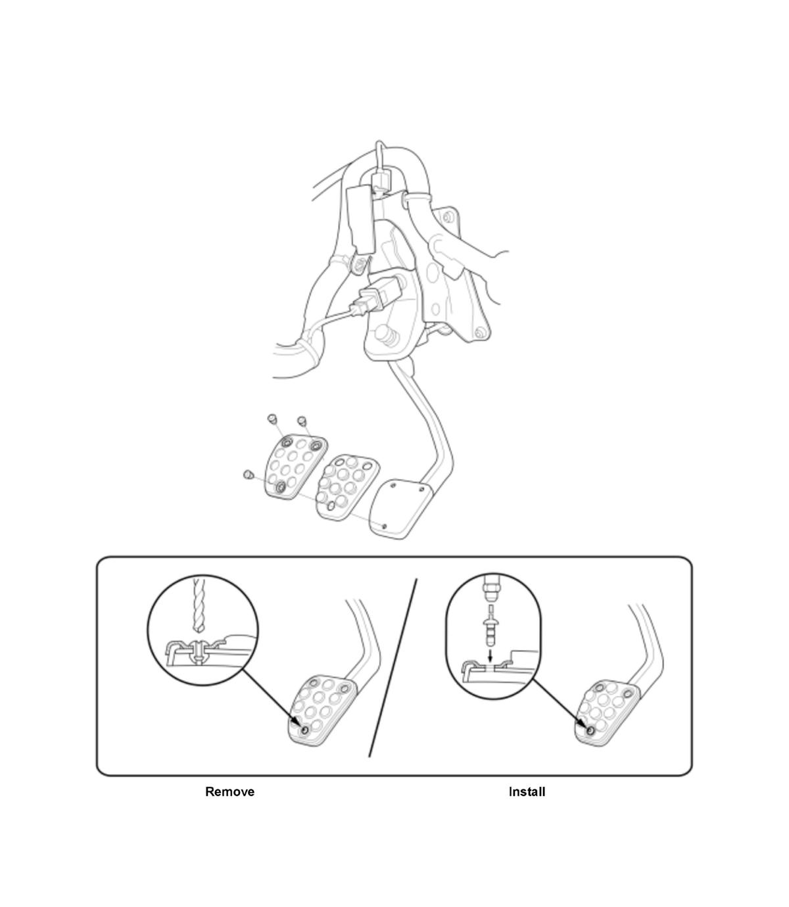

LEMON Manuals
: Even more car manuals for everyone: 1960-2025
Home
>>
Honda
>>
2016
>>
Civic LX, 4D Sedan, Automatic CVT Trans
>>
Repair and Diagnosis (Single Page)
>>
External Pages
>>
Different variant/trim
>>
Section 2 (Manual Transaxle (M/T) - Service Information)
>>
Removal and Installation
>>
Clutch Pedal Pad Cover Removal and Installation (K20C1 (M/T)) (2017 2018 2019 2020 2021)
>>
Exploded View
Exploded View
WARNING:
This page is about a different variant/trim than selected.
WARNING:
Wear goggles or safety glasses to prevent eye injury.
Clutch Pedal Pad Cover

Courtesy of HONDA, U.S.A., INC.